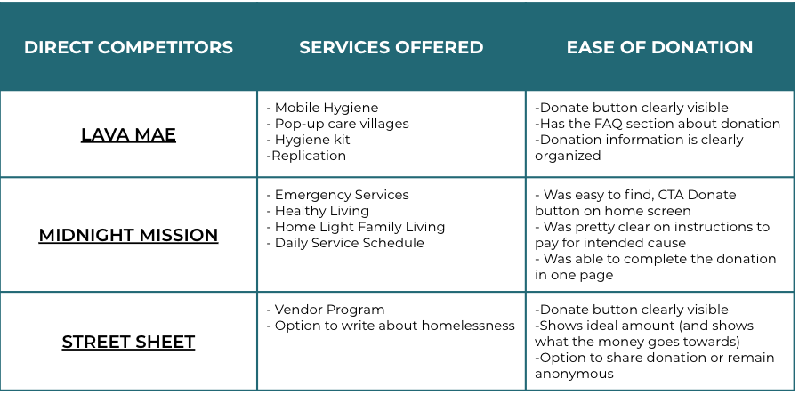
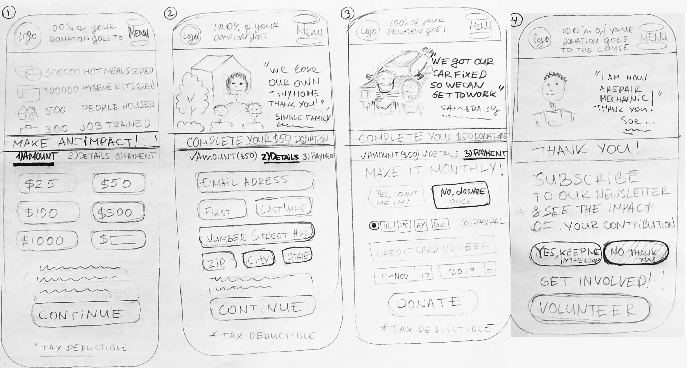
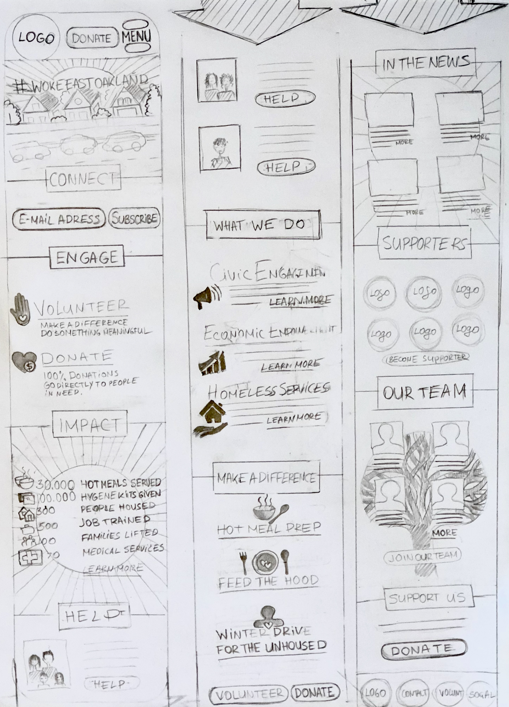
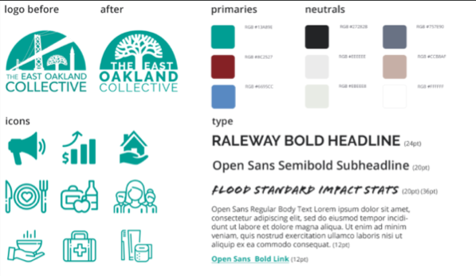

East Oakland Collective is a non-profit organization based in Berkeley, California. They strive to provide low-income individuals with the basic necessities. The organization has two volunteer events that people can sign up for: Weekly Hot Meal, and Feed the Hood.
The East Oakland Collective is a non-profit organization dedicated to assisting individuals with their basic needs. When our team initially browsed through the website, we noticed that their website could be improved.
How might we create a cohesive and simple design for a non-profit organization?
Our process for this project involved research and design. We needed to understand the pain points of the original site so we could create a cohesive and simple design.
We contacted the CEO of the organization, Candice Elder, and asked her questions about
how East Oakland Collective managed the following flows: donation, volunteering, and community service.
After that, we created a google survey that asked questions about the following topics:
We sent this survey through 2 Facebook accounts and got a total of 21 responses. We synthesized the results and created 2 personas. Meet Mary and John!
Before our team could start designing the final prototype, we conducted a competitor analysis on other local non-profit organizations. The goal was to understand how other organizations organized their flows.
We started sketching how the flows would look like.  
Once we finalized how to organize the screens, we worked on creating a style guide. We took these sketches and converted them into a final prototype.
Like any project, this one had its ups and downs. We managed to get in touch with the stakeholder. The answers we recieved helped us identify the key problems. This was a short project, but we managed to learn a new tool (Sketch). We were able to communicate with each other effectively. Hopefully next time, we can add more micro interactions to the forms to make it more engaging. Hopefully, we can improve upon this design in the future.